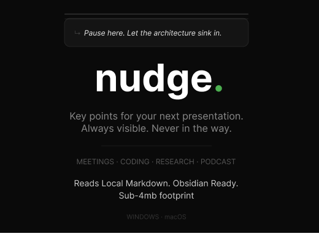

Reads local Markdown. Obsidian ready. Native Rust engine. Sub-4MB footprint.
Download for Free (or tip $9)
Checkbox nodes for execution. Toggle [ ] to [x] — file mutation on disk. Your commitments, tracked.
Neutral list items for reference. Rendered as • — visible but never toggle-able. Safe for notes and context.
Passive context anchors. No checkbox, no decoration. Pure text for blockers, notes, and ambient information that anchors your workflow.
Adjustable width constraints. Snap natively to the Left, Center, or Right of your active monitor.
Pin to top for an always-on-top overlay, or enable auto-hide to fade out when losing focus.
Collapse into a minimalist title bar or expand for full document view.
Hardware-accelerated rendering in both Light and Dark modes to match your OS.
MEETINGS • CODING • RESEARCH • PODCASTS